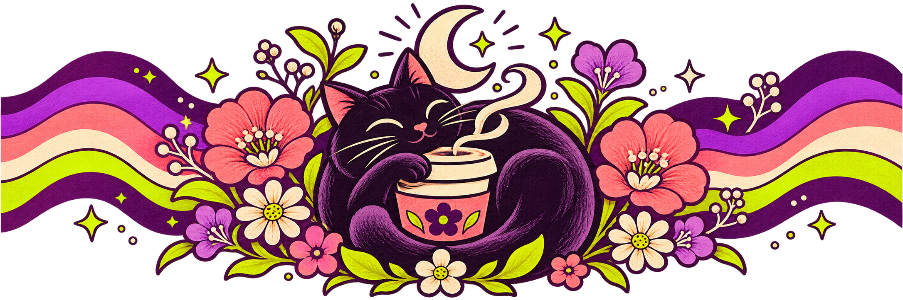

This original custom coffee tumbler design brings together three things that make a daily coffee break feel personal: a relaxed black cat, a warm cup, and a little midnight magic. Coral blossoms, violet petals, lime leaves, and retro waves carry the artwork around the full print area.
A colorful personalized tumbler idea for cat lovers
The Midnight Cat Café concept is designed as an expressive personalized tumbler starting point. The central cat-and-coffee illustration gives the wrap an easy focal point, while the repeating flowers, stars, and stripes keep the sides visually connected as the tumbler turns.
Its playful palette and pet-centered subject also make it a fun cat lover gift or coffee lover gift idea. The artwork is a design concept: use the customizer to describe your own cat, colors, and details, or download the original print file as a reference.
Designed for a 20 oz stainless steel tumbler
The VIBEYA custom drinkware example is a 20 oz stainless steel tumbler with a clear sliding lid and separate straw. The product supports a full-wrap print, so the artwork can flow around the body rather than stopping at a single front panel.
See the full-wrap artwork
The flat artwork below is the print concept used in this inspiration. It is a transparent PNG, separate from the product mockup, so it can be downloaded for review or uploaded as a visual reference in the design studio.

Download the full-wrap print artwork (PNG) ↓
Make the idea your own
- Open the custom tumbler design studio from this page.
- Keep the cat-and-coffee theme or describe your own pet and favorite colors.
- For the closest visual reference, upload the downloaded full-wrap artwork.
- Review the generated layout against the supplier print area before placing an order.
A cozy black cat curled around a steaming coffee cup beneath a crescent moon, surrounded by coral flowers, violet and lime retro waves, tiny stars, and hand-painted leaves. Make a joyful, colorful full-wrap design for a 20 oz stainless steel tumbler, with crisp outlines and a playful coffee-lover gift feel.
Frequently asked questions
Can I use this as a personalized cat tumbler?
Yes. Treat the artwork as inspiration, then describe your own cat or add a reference image in the customizer to make a more personal version.
Does the print wrap around the tumbler?
The example product is set up for a full-wrap design. Check the final artwork dimensions and placement against the production template before ordering.
Is the tumbler image a production photo?
No. It is an AI-generated concept mockup showing how the original print could look on the product. Confirm the final print proof and product details before production.